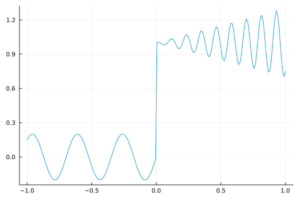
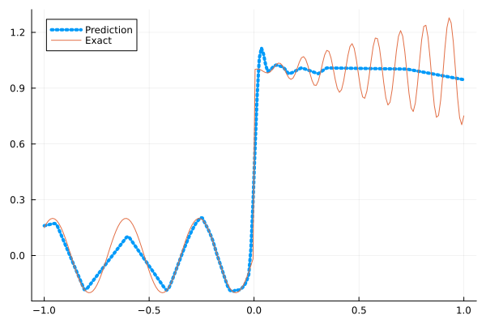
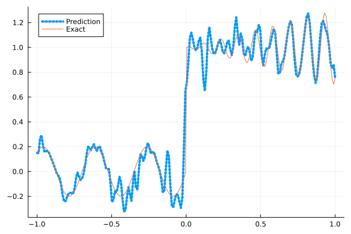
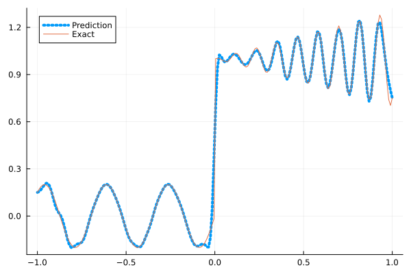
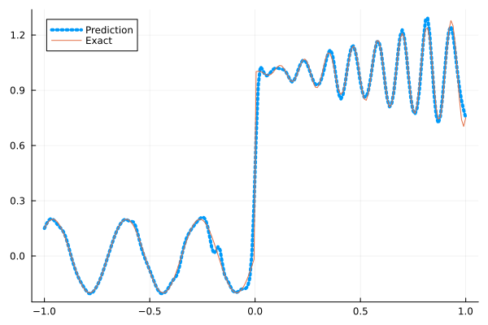

Fitting a nonlinear discontinuous function
This example is taken from here. However, we do not use adaptive activation functions. Instead, we show that using suitable non-parametric activation functions immediately performs better.
Consider the following discontinuous function with discontinuity at $x=0$:
\[u(x)= \begin{cases}0.2 \sin (18 x) & \text { if } x \leq 0 \\ 1+0.3 x \cos (54 x) & \text { otherwise }\end{cases}\]
The domain is $[-1,1]$. The number of training points used is 50.
Import pacakges
using Lux, Sophon
using NNlib, Optimisers, Plots, Random, StatsBase, ZygoteDataset
function u(x)
if x <= 0
return 0.2 * sin(18 * x)
else
return 1 + 0.3 * x * cos(54 * x)
end
end
function generate_data(n=50)
x = reshape(collect(range(-1.0f0, 1.0f0, n)), (1, n))
y = u.(x)
return (x, y)
endgenerate_data (generic function with 2 methods)Let's visualize the data.
x_train, y_train = generate_data(50)
x_test, y_test = generate_data(200)
Plots.plot(vec(x_test), vec(y_test),label=false)
Naive Neural Nets
First we demonstrate show naive fully connected neural nets could be really bad at fitting this function.
model = FullyConnected((1,50,50,50,50,1), relu)Chain(
layer_1 = Dense(1 => 50, relu), # 100 parameters
layer_2 = Dense(50 => 50, relu), # 2_550 parameters
layer_3 = Dense(50 => 50, relu), # 2_550 parameters
layer_4 = Dense(50 => 50, relu), # 2_550 parameters
layer_5 = Dense(50 => 1), # 51 parameters
) # Total: 7_801 parameters,
# plus 0 states.Train the model
function train(model, x, y)
ps, st = Lux.setup(Random.default_rng(), model)
opt = Adam()
st_opt = Optimisers.setup(opt,ps)
function loss(model, ps, st, x, y)
y_pred, _ = model(x, ps, st)
mes = mean(abs2, y_pred .- y)
return mes
end
for i in 1:2000
gs = gradient(p->loss(model,p,st,x,y), ps)[1]
st_opt, ps = Optimisers.update(st_opt, ps, gs)
if i % 100 == 1 || i == 2000
println("Epoch $i || ", loss(model,ps,st,x,y))
end
end
return ps, st
endtrain (generic function with 1 method)Plot the result
@time ps, st = train(model, x_train, y_train)
y_pred = model(x_test,ps,st)[1]
Plots.plot(vec(x_test), vec(y_pred),label="Prediction",line = (:dot, 4))
Plots.plot!(vec(x_test), vec(y_test),label="Exact",legend=:topleft)Epoch 1 || 0.5208388774628208
Epoch 101 || 0.019740999606576923
Epoch 201 || 0.01616226956140465
Epoch 301 || 0.015912142137988198
Epoch 401 || 0.015779864303563724
Epoch 501 || 0.015633229856677817
Epoch 601 || 0.015421438095514167
Epoch 701 || 0.01512216459850991
Epoch 801 || 0.014460334867039838
Epoch 901 || 0.013473490612637397
Epoch 1001 || 0.012900931487176592
Epoch 1101 || 0.012533701134890909
Epoch 1201 || 0.012229640370636665
Epoch 1301 || 0.01204935660914047
Epoch 1401 || 0.01183664813156501
Epoch 1501 || 0.011565208377543405
Epoch 1601 || 0.011116783741599086
Epoch 1701 || 0.01057997965646123
Epoch 1801 || 0.009713567770095695
Epoch 1901 || 0.008939563771270023
Epoch 2000 || 0.008261514473593941
13.425053 seconds (12.81 M allocations: 1.445 GiB, 4.18% gc time, 90.28% compilation time)
Siren
We use four hidden layers with 50 neurons in each.
model = Siren(1,50,50,50,50,1; omega = 30f0)Chain(
layer_1 = Dense(1 => 50, sin), # 100 parameters
layer_2 = Dense(50 => 50, sin), # 2_550 parameters
layer_3 = Dense(50 => 50, sin), # 2_550 parameters
layer_4 = Dense(50 => 50, sin), # 2_550 parameters
layer_5 = Dense(50 => 1), # 51 parameters
) # Total: 7_801 parameters,
# plus 0 states.@time ps, st = train(model, x_train, y_train)
y_pred = model(x_test,ps,st)[1]
Plots.plot(vec(x_test), vec(y_pred),label="Prediction",line = (:dot, 4))
Plots.plot!(vec(x_test), vec(y_test),label="Exact",legend=:topleft)Epoch 1 || 1.1410118027459495
Epoch 101 || 0.0008309830592654194
Epoch 201 || 3.617792631338158e-5
Epoch 301 || 1.018147505230879e-6
Epoch 401 || 1.807962380667113e-8
Epoch 501 || 1.7562360820166032e-10
Epoch 601 || 2.4961194584628075e-12
Epoch 701 || 1.906215641891625e-13
Epoch 801 || 4.057015588999066e-14
Epoch 901 || 3.0847289076499627e-14
Epoch 1001 || 2.8292927310694466e-14
Epoch 1101 || 3.338202509275019e-14
Epoch 1201 || 4.3553552184353864e-14
Epoch 1301 || 3.9109933467813395e-14
Epoch 1401 || 3.960457339411997e-14
Epoch 1501 || 4.170247205284919e-14
Epoch 1601 || 4.915484230774303e-14
Epoch 1701 || 2.148269632394793e-14
Epoch 1801 || 3.382386215315093e-14
Epoch 1901 || 3.2327394116962136e-14
Epoch 2000 || 3.733885864276603e-14
6.662888 seconds (7.67 M allocations: 1.252 GiB, 5.47% gc time, 79.01% compilation time)
As we can see the model overfits the data, and the high frequencies cannot be optimized away. We need to tunning the hyperparameter omega
model = Siren(1,50,50,50,50,1; omega = 10f0)Chain(
layer_1 = Dense(1 => 50, sin), # 100 parameters
layer_2 = Dense(50 => 50, sin), # 2_550 parameters
layer_3 = Dense(50 => 50, sin), # 2_550 parameters
layer_4 = Dense(50 => 50, sin), # 2_550 parameters
layer_5 = Dense(50 => 1), # 51 parameters
) # Total: 7_801 parameters,
# plus 0 states.@time ps, st = train(model, x_train, y_train)
y_pred = model(x_test,ps,st)[1]
Plots.plot(vec(x_test), vec(y_pred),label="Prediction",line = (:dot, 4))
Plots.plot!(vec(x_test), vec(y_test),label="Exact",legend=:topleft)Epoch 1 || 0.4591705565373263
Epoch 101 || 0.006584377983190501
Epoch 201 || 0.005239811180381635
Epoch 301 || 0.0041264241737999805
Epoch 401 || 0.0030269911959131457
Epoch 501 || 0.0022587447622371597
Epoch 601 || 0.001648476008416007
Epoch 701 || 0.0010043375265255494
Epoch 801 || 0.00045814234599909817
Epoch 901 || 0.0001806695731019227
Epoch 1001 || 9.169300768560842e-5
Epoch 1101 || 6.218803050609736e-5
Epoch 1201 || 4.81554130328529e-5
Epoch 1301 || 3.9519991844843506e-5
Epoch 1401 || 3.3665793706470126e-5
Epoch 1501 || 2.956270078335207e-5
Epoch 1601 || 2.6587260189842675e-5
Epoch 1701 || 2.431255855690926e-5
Epoch 1801 || 2.441877174012514e-5
Epoch 1901 || 2.0870662564930053e-5
Epoch 2000 || 1.951044295344166e-5
1.276691 seconds (1.15 M allocations: 892.537 MiB, 6.51% gc time)
Gaussian activation function
We can also try using a fully connected net with the gaussian activation function.
model = FullyConnected((1,50,50,50,50,1), gaussian)Chain(
layer_1 = Dense(1 => 50, gaussian), # 100 parameters
layer_2 = Dense(50 => 50, gaussian), # 2_550 parameters
layer_3 = Dense(50 => 50, gaussian), # 2_550 parameters
layer_4 = Dense(50 => 50, gaussian), # 2_550 parameters
layer_5 = Dense(50 => 1), # 51 parameters
) # Total: 7_801 parameters,
# plus 0 states.@time ps, st = train(model, x_train, y_train)
y_pred = model(x_test,ps,st)[1]
Plots.plot(vec(x_test), vec(y_pred),label="Prediction",line = (:dot, 4))
Plots.plot!(vec(x_test), vec(y_test),label="Exact",legend=:topleft)Epoch 1 || 0.28896298556971217
Epoch 101 || 0.0041790627937383475
Epoch 201 || 0.0015607692341511178
Epoch 301 || 0.00014353979337557835
Epoch 401 || 2.539885651922199e-5
Epoch 501 || 0.00017472313833950205
Epoch 601 || 5.649143116809063e-9
Epoch 701 || 1.578108157241676e-6
Epoch 801 || 7.662898299622538e-12
Epoch 901 || 1.0541058690397529e-13
Epoch 1001 || 2.8379111456795398e-12
Epoch 1101 || 3.7333454572562675e-7
Epoch 1201 || 1.3332172000078669e-11
Epoch 1301 || 1.0355107668779349e-13
Epoch 1401 || 8.0233432522981e-14
Epoch 1501 || 1.9063659363038e-13
Epoch 1601 || 8.105340005255347e-14
Epoch 1701 || 1.0429541111444737e-13
Epoch 1801 || 3.707665204802203e-7
Epoch 1901 || 1.151941831927159e-7
Epoch 2000 || 6.263197142903176e-7
6.314770 seconds (6.82 M allocations: 1.207 GiB, 5.46% gc time, 76.52% compilation time)
Quadratic activation function
quadratic is much cheaper to compute compared to the Gaussain activation function.
model = FullyConnected((1,50,50,50,50,1), quadratic)Chain(
layer_1 = Dense(1 => 50, quadratic), # 100 parameters
layer_2 = Dense(50 => 50, quadratic), # 2_550 parameters
layer_3 = Dense(50 => 50, quadratic), # 2_550 parameters
layer_4 = Dense(50 => 50, quadratic), # 2_550 parameters
layer_5 = Dense(50 => 1), # 51 parameters
) # Total: 7_801 parameters,
# plus 0 states.@time ps, st = train(model, x_train, y_train)
y_pred = model(x_test,ps,st)[1]
Plots.plot(vec(x_test), vec(y_pred),label="Prediction",line = (:dot, 4))
Plots.plot!(vec(x_test), vec(y_test),label="Exact",legend=:topleft)Epoch 1 || 0.4068887766083095
Epoch 101 || 0.006429307789272868
Epoch 201 || 0.005714723934130228
Epoch 301 || 0.005299863581481267
Epoch 401 || 0.004985232921788173
Epoch 501 || 0.004691103864017311
Epoch 601 || 0.004395971436445465
Epoch 701 || 0.005150550032438029
Epoch 801 || 0.0028569681472917787
Epoch 901 || 0.0014299429327747487
Epoch 1001 || 0.00016804053850024762
Epoch 1101 || 1.2149487636424496e-5
Epoch 1201 || 1.0966498227736813e-6
Epoch 1301 || 3.6232301759709615e-7
Epoch 1401 || 2.8630217300488114e-7
Epoch 1501 || 2.827848485459026e-5
Epoch 1601 || 1.880377913211452e-7
Epoch 1701 || 1.4430543798558905e-7
Epoch 1801 || 4.7866988991865046e-6
Epoch 1901 || 1.892861314821618e-7
Epoch 2000 || 1.3476312894403687e-7
5.560424 seconds (6.54 M allocations: 1.189 GiB, 6.57% gc time, 81.98% compilation time)
Conclusion
"Neural networks suppresse high frequency components" is a misinterpretation of the spectral bias. The accurate way of putting it is that the lower frequencies in the error are optimized first in the optimization process. This can be seen in Siren's example of overfitting data, where you do not have implicit regularization. The high frequency in the network will never go away because it has fitted the data perfectly.
Mainstream attributes the phenomenon that neural networks "suppress" high frequencies to gradient descent. This is not the whole picture. Initialization also plays an important role. Siren mitigats this problem by initializing larger weights in the first layer, while activation functions such as gassian have large enough gradients and sufficiently large support of the second derivative with proper hyperparameters. Please refer to [1], [2] and [3] if you want to dive deeper into this.